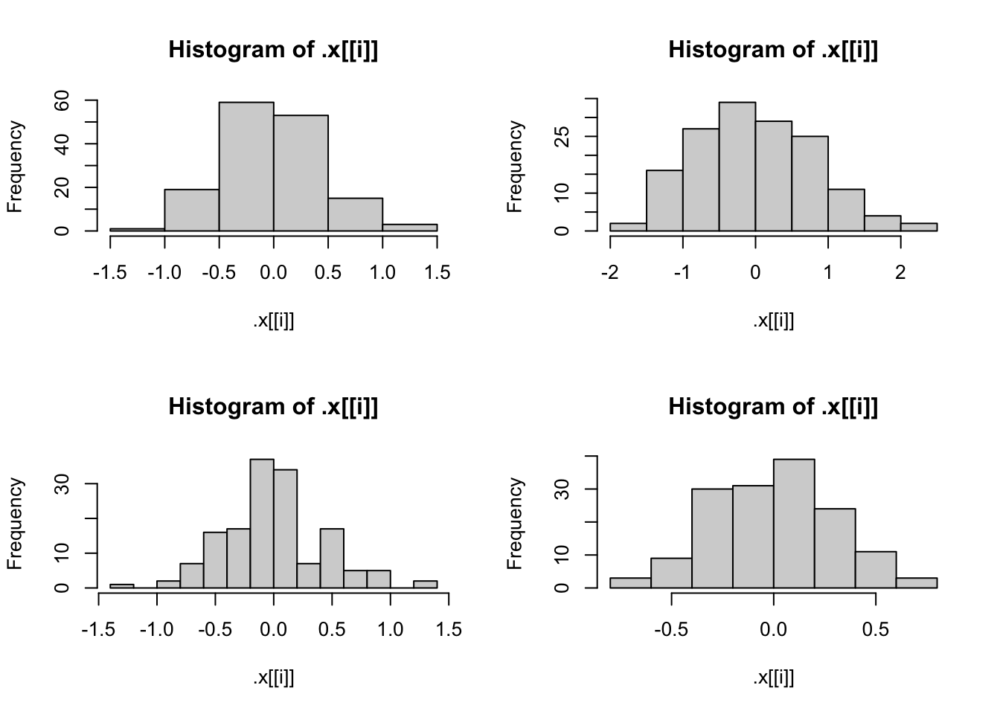
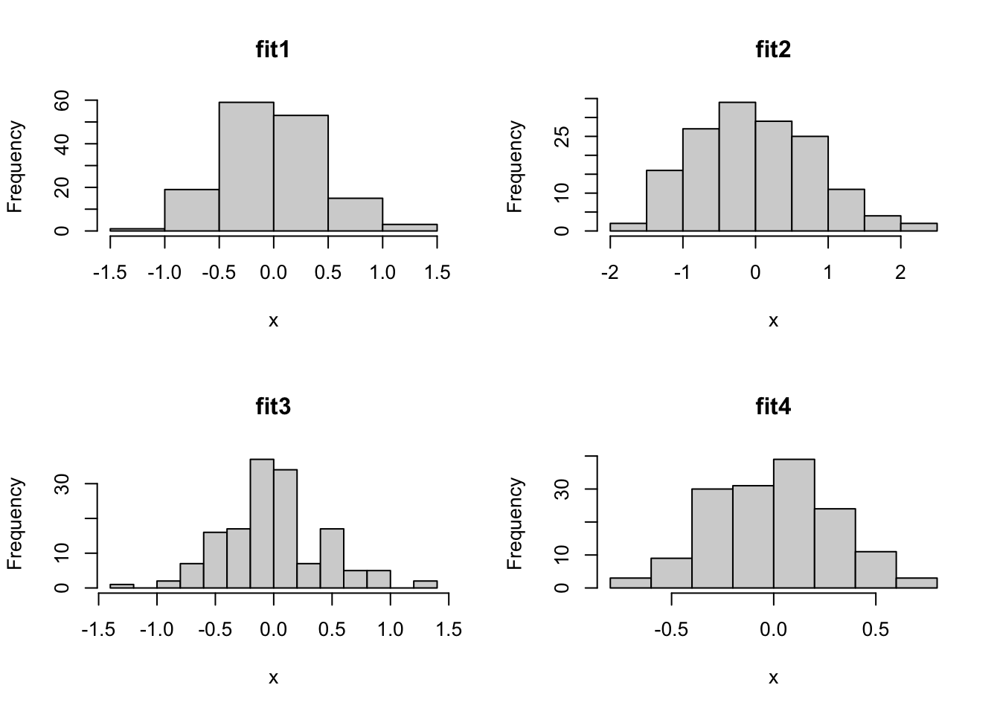

get_RMSE <- function(y, y_hat, ...) {
squared_errors <- (y - y_hat)^2
rmse <- sqrt(mean(squared_errors, ...))
return(rmse)
}Homework 6
Task 1
Conceptual questions:
The purpose of the
lapply()function is to apply a function to lists and obtain a list of objects that are a result of that function. The equivalentpurrfunction to this function is themap()function.The correct way to code this would be:
lapply(list, cor, method = "kendall").lapplywill pass the third argument into the function in the second argument.The main advantage of using the
purrfamily functions is being able to use the helpers which all for you to write compact code. Additionally, thepurrfamily of functions are type stable meaning that R will not try to guess the type of the data. This is helpful since you always know the type for the output of thepurrfamily functions and can therefore avoid errors.Side-effect functions are pipeable functions that perform an action like printing something but do not change and silently return the dataframe with
invisible(). This allows them to be used in piping together functions without returning the dataframe in the output. The example given in the notes is a function to count the number of rows in the dataframe. Silently returning the dataframe allows for you to use this function in piping so the input of the next function in the chain is the dataframe.In a function, all of the variables are local and only exist within that function. This means that the scope of the variable name sd and the function sd are different. Within the function, the variable name sd masks the function sd but only within that function. It is due to R’s environments and lexical scoping.
Task 2
Question 1
First, we will write our RMSE function:
In this function, the ellipsis allows for the user of the function to pass in additional arguments that will be passed into the mean function, such as na.rm = TRUE
Question 2
Now that we have the function, we can run the code from the homework.
set.seed(10)
n <- 100
x <- runif(n)
resp <- 3 + 10 * x + rnorm(n)
pred <- predict(lm(resp ~ x), data.frame(x))Now, lets test our function
rmse <- get_RMSE(resp, pred)
rmse[1] 0.9581677Great! It looks to work. Now, let’s replace two of the response values with NA.
resp[5] <- NA_real_
resp[55] <- NA_real_
resp [1] 7.674144 5.733128 8.637031 12.068788 NA 6.040709 4.843093
[8] 6.255948 8.512399 7.587703 8.278962 8.221201 3.304767 9.299369
[15] 7.646876 8.504220 4.254724 5.160568 7.550652 10.115022 12.028134
[22] 7.723097 9.702653 6.337183 5.568563 11.239175 9.903050 4.965503
[29] 9.656077 8.081564 8.948798 3.708220 5.410925 12.714925 7.666618
[36] 10.636295 11.886290 14.767056 8.670500 7.931076 5.338484 5.097557
[43] 3.213884 11.444994 6.093762 3.192188 1.563749 8.753929 4.177170
[50] 12.242498 5.781476 12.783701 4.418721 8.442989 NA 9.395394
[57] 8.255719 6.016290 8.026494 9.180810 2.038727 5.273544 7.225220
[64] 6.654107 12.260485 10.688362 9.773488 8.216967 5.093565 6.142304
[71] 3.274337 8.547150 9.381826 7.061813 4.016495 7.543794 6.976389
[78] 11.550401 5.209433 3.872522 13.043037 8.277356 3.231859 8.553664
[85] 4.576422 2.213665 11.475262 6.469006 5.333390 5.656304 6.209727
[92] 8.908905 6.956097 9.642321 7.188749 12.413663 6.020730 8.507994
[99] 11.776177 3.387353Now that we replaced values at 5 and 55 in the response with NA. Let’s test our RMSE function with and without a na.rm argument.
rmse <- get_RMSE(resp, pred)
print(rmse)[1] NArmse <- get_RMSE(resp, pred, na.rm = TRUE)
print(rmse)[1] 0.9641772Here we can see the importance of the functionality to remove the NAs. If we do not, we will get NA as the result.
Question 3
Now, we can do the same for MAE.
get_MAE <- function(y, y_hat, ...){
absolute_error <- abs(y - y_hat)
mae <- mean(absolute_error, ...)
return(mae)
}Question 4
Now, we will run the code to get responses and predictions again.
set.seed(10)
n <- 100
x <- runif(n)
resp <- 3 + 10 * x + rnorm(n)
pred <- predict(lm(resp ~ x), data.frame(x))Let’s test in the same way we did before:
mae <- get_MAE(resp, pred)
print(mae)[1] 0.8155776# Replacing two with NA
resp[5] <- NA_real_
resp[55] <- NA_real_
print(resp) [1] 7.674144 5.733128 8.637031 12.068788 NA 6.040709 4.843093
[8] 6.255948 8.512399 7.587703 8.278962 8.221201 3.304767 9.299369
[15] 7.646876 8.504220 4.254724 5.160568 7.550652 10.115022 12.028134
[22] 7.723097 9.702653 6.337183 5.568563 11.239175 9.903050 4.965503
[29] 9.656077 8.081564 8.948798 3.708220 5.410925 12.714925 7.666618
[36] 10.636295 11.886290 14.767056 8.670500 7.931076 5.338484 5.097557
[43] 3.213884 11.444994 6.093762 3.192188 1.563749 8.753929 4.177170
[50] 12.242498 5.781476 12.783701 4.418721 8.442989 NA 9.395394
[57] 8.255719 6.016290 8.026494 9.180810 2.038727 5.273544 7.225220
[64] 6.654107 12.260485 10.688362 9.773488 8.216967 5.093565 6.142304
[71] 3.274337 8.547150 9.381826 7.061813 4.016495 7.543794 6.976389
[78] 11.550401 5.209433 3.872522 13.043037 8.277356 3.231859 8.553664
[85] 4.576422 2.213665 11.475262 6.469006 5.333390 5.656304 6.209727
[92] 8.908905 6.956097 9.642321 7.188749 12.413663 6.020730 8.507994
[99] 11.776177 3.387353# Test without na.rm
mae <- get_MAE(resp, pred)
print(mae)[1] NAmae <- get_MAE(resp, pred, na.rm = TRUE)
print(mae)[1] 0.820124Perfect, everything behaved as expected.
Question 5
Now, let’s create the wrapper function described in the homework
get_metrics <- function(y, y_hat, metrics = c("RMSE", "MAE"), ...) {
if (!(is.vector(y) && is.atomic(y) && is.numeric(y))) {
stop("`y` must be a numeric (atomic) vector.")
}
if (!(is.vector(y_hat) && is.atomic(y_hat) && is.numeric(y_hat))) {
stop("`yhat` must be a numeric (atomic) vector.")
}
results <- list()
if ("RMSE" %in% metrics) {
results$RMSE <- get_RMSE(y, y_hat, ...)
}
if ("MAE" %in% metrics) {
results$MAE <- get_MAE(y, y_hat, ...)
}
return(results)
}Question 6
Great, now let’s generate our data.
set.seed(10)
n <- 100
x <- runif(n)
resp <- 3 + 10 * x + rnorm(n)
pred <- predict(lm(resp ~ x), data.frame(x))And now we test!
mae <- get_metrics(resp, pred, "MAE")
print(mae)$MAE
[1] 0.8155776rmse <- get_metrics(resp, pred, "RMSE")
print(rmse)$RMSE
[1] 0.9581677both <- get_metrics(resp, pred) #default behavior returns both
print(both)$RMSE
[1] 0.9581677
$MAE
[1] 0.8155776Great, it looks to work. Now, with NAs
resp[5] <- NA_real_
resp[55] <- NA_real_
print(resp) [1] 7.674144 5.733128 8.637031 12.068788 NA 6.040709 4.843093
[8] 6.255948 8.512399 7.587703 8.278962 8.221201 3.304767 9.299369
[15] 7.646876 8.504220 4.254724 5.160568 7.550652 10.115022 12.028134
[22] 7.723097 9.702653 6.337183 5.568563 11.239175 9.903050 4.965503
[29] 9.656077 8.081564 8.948798 3.708220 5.410925 12.714925 7.666618
[36] 10.636295 11.886290 14.767056 8.670500 7.931076 5.338484 5.097557
[43] 3.213884 11.444994 6.093762 3.192188 1.563749 8.753929 4.177170
[50] 12.242498 5.781476 12.783701 4.418721 8.442989 NA 9.395394
[57] 8.255719 6.016290 8.026494 9.180810 2.038727 5.273544 7.225220
[64] 6.654107 12.260485 10.688362 9.773488 8.216967 5.093565 6.142304
[71] 3.274337 8.547150 9.381826 7.061813 4.016495 7.543794 6.976389
[78] 11.550401 5.209433 3.872522 13.043037 8.277356 3.231859 8.553664
[85] 4.576422 2.213665 11.475262 6.469006 5.333390 5.656304 6.209727
[92] 8.908905 6.956097 9.642321 7.188749 12.413663 6.020730 8.507994
[99] 11.776177 3.387353mae <- get_metrics(resp, pred, "MAE")
print(mae)$MAE
[1] NAmae <- get_metrics(resp, pred, "MAE", na.rm = TRUE)
print(mae)$MAE
[1] 0.820124rmse <- get_metrics(resp, pred, "RMSE")
print(rmse)$RMSE
[1] NArmse <- get_metrics(resp, pred, "RMSE", na.rm = TRUE)
print(rmse)$RMSE
[1] 0.9641772both <- get_metrics(resp, pred) #default behavior returns both
print(both)$RMSE
[1] NA
$MAE
[1] NAboth <- get_metrics(resp, pred, na.rm = TRUE) #default behavior returns both
print(both)$RMSE
[1] 0.9641772
$MAE
[1] 0.820124Again, everything works as expected. Now, what if we replace our data with a dataframe.
error <- get_metrics(iris, iris)Error in get_metrics(iris, iris): `y` must be a numeric (atomic) vector.Perfect, we get the error we expected.
Task 3
Let’s create the list object first. We will also load in tidyverse.
library(tidyverse)── Attaching core tidyverse packages ──────────────────────── tidyverse 2.0.0 ──
✔ dplyr 1.1.4 ✔ readr 2.1.5
✔ forcats 1.0.0 ✔ stringr 1.5.1
✔ ggplot2 3.5.2 ✔ tibble 3.2.1
✔ lubridate 1.9.4 ✔ tidyr 1.3.1
✔ purrr 1.0.4
── Conflicts ────────────────────────────────────────── tidyverse_conflicts() ──
✖ dplyr::filter() masks stats::filter()
✖ dplyr::lag() masks stats::lag()
ℹ Use the conflicted package (<http://conflicted.r-lib.org/>) to force all conflicts to become errorslm_fit1 <- lm(Sepal.Length ~ Sepal.Width + Species, data = iris)Question 1
Let’s pull out the coefficients using the three methods described in the homework
# First method
coef1 <- lm_fit1$coefficients
print(coef1) (Intercept) Sepal.Width Speciesversicolor Speciesvirginica
2.2513932 0.8035609 1.4587431 1.9468166 coef2 <- coef(lm_fit1)
print(coef2) (Intercept) Sepal.Width Speciesversicolor Speciesvirginica
2.2513932 0.8035609 1.4587431 1.9468166 coef3 <- lm_fit1 |> pluck("coefficients")
print(coef3) (Intercept) Sepal.Width Speciesversicolor Speciesvirginica
2.2513932 0.8035609 1.4587431 1.9468166 All three methods return the same coefficients as expected.
Question 2
First, let’s fit our models.
lm_fit2 <- lm(Sepal.Length ~ Sepal.Width, data = iris)
lm_fit3 <- lm(Sepal.Length ~ Petal.Width + Sepal.Width + Species, data = iris)
lm_fit4 <- lm(Sepal.Length ~ Petal.Width + Petal.Length + Sepal.Width + Species,
data = iris)
fits <- list(lm_fit1, lm_fit2, lm_fit3, lm_fit4)Now we can use a combo of pluck and map to pluck all of the coefficients from fits.
fits |> map(pluck("coefficients"))[[1]]
(Intercept) Sepal.Width Speciesversicolor Speciesvirginica
2.2513932 0.8035609 1.4587431 1.9468166
[[2]]
(Intercept) Sepal.Width
6.5262226 -0.2233611
[[3]]
(Intercept) Petal.Width Sepal.Width Speciesversicolor
2.5210733 0.3715768 0.6982260 0.9881297
Speciesvirginica
1.2375878
[[4]]
(Intercept) Petal.Width Petal.Length Sepal.Width
2.1712663 -0.3151552 0.8292439 0.4958889
Speciesversicolor Speciesvirginica
-0.7235620 -1.0234978 Perfect, it works as expected.
Question 3
Now, we can us map to get confidence intervals as well.
fits |> map(confint)[[1]]
2.5 % 97.5 %
(Intercept) 1.5206309 2.982156
Sepal.Width 0.5933983 1.013723
Speciesversicolor 1.2371791 1.680307
Speciesvirginica 1.7491525 2.144481
[[2]]
2.5 % 97.5 %
(Intercept) 5.579865 7.47258038
Sepal.Width -0.529820 0.08309785
[[3]]
2.5 % 97.5 %
(Intercept) 1.74261803 3.2995285
Petal.Width -0.02042746 0.7635811
Sepal.Width 0.46205710 0.9343950
Speciesversicolor 0.44520784 1.5310516
Speciesvirginica 0.46412393 2.0110518
[[4]]
2.5 % 97.5 %
(Intercept) 1.6182321 2.72430044
Petal.Width -0.6140049 -0.01630542
Petal.Length 0.6937939 0.96469395
Sepal.Width 0.3257653 0.66601260
Speciesversicolor -1.1982739 -0.24885002
Speciesvirginica -1.6831329 -0.36386273Great! Looks to have worked.
Question 4
Now, let’s aim to plot the residuals.
par(mfrow = c(2, 2))
fits |> map(residuals) |> walk(hist)
The plots look great! But the names are not too great.
Question 5
Let’s try to fix that!
par(mfrow = c(2, 2))
fits |> map(residuals) |> set_names(c("fit1", "fit2", "fit3", "fit4")) |> iwalk(\(x, y) hist(x, main = y))